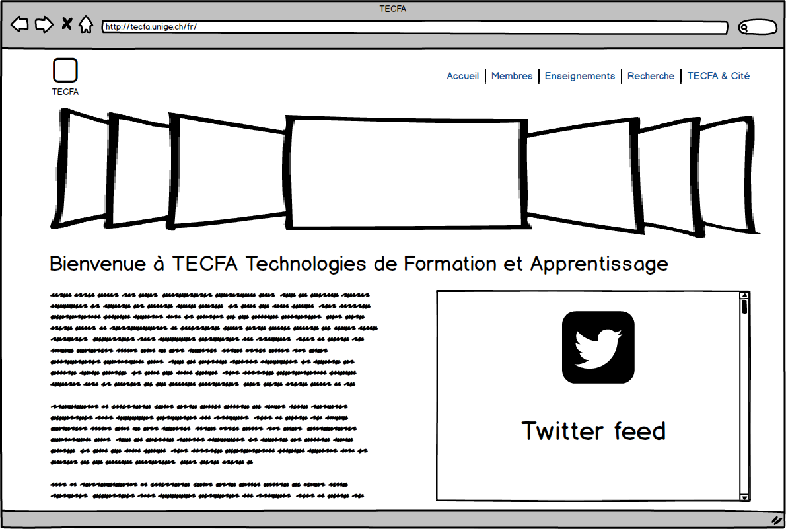
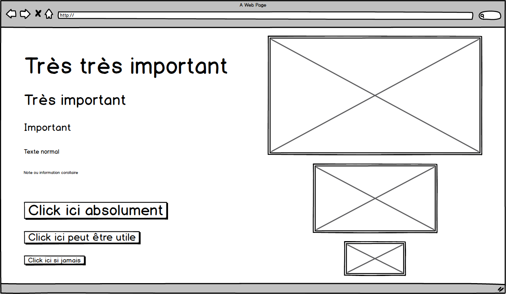
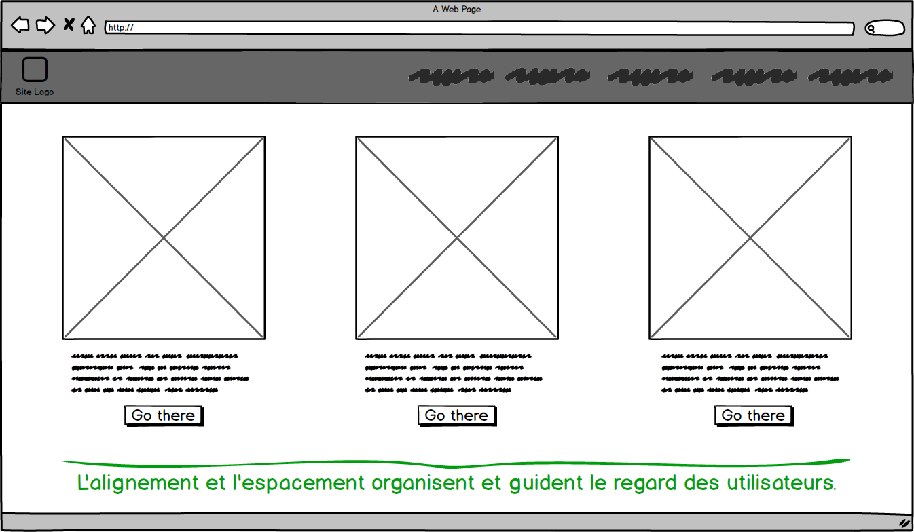
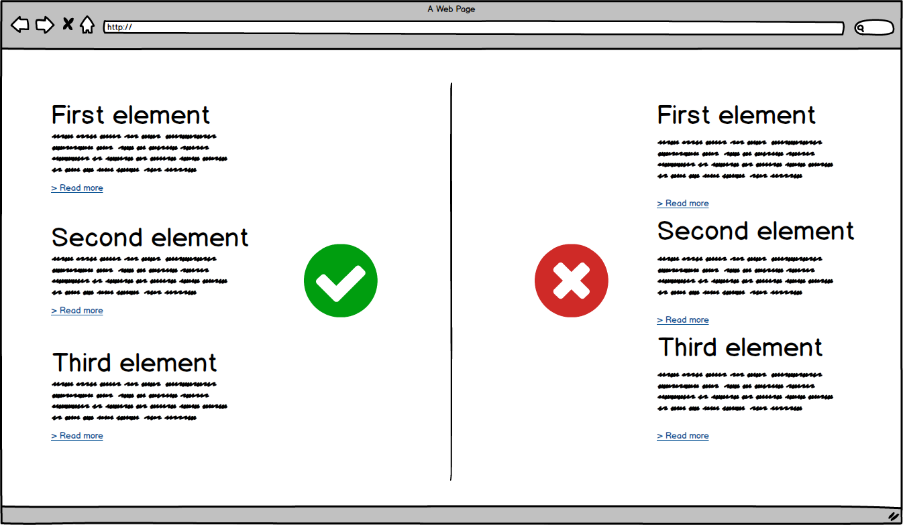
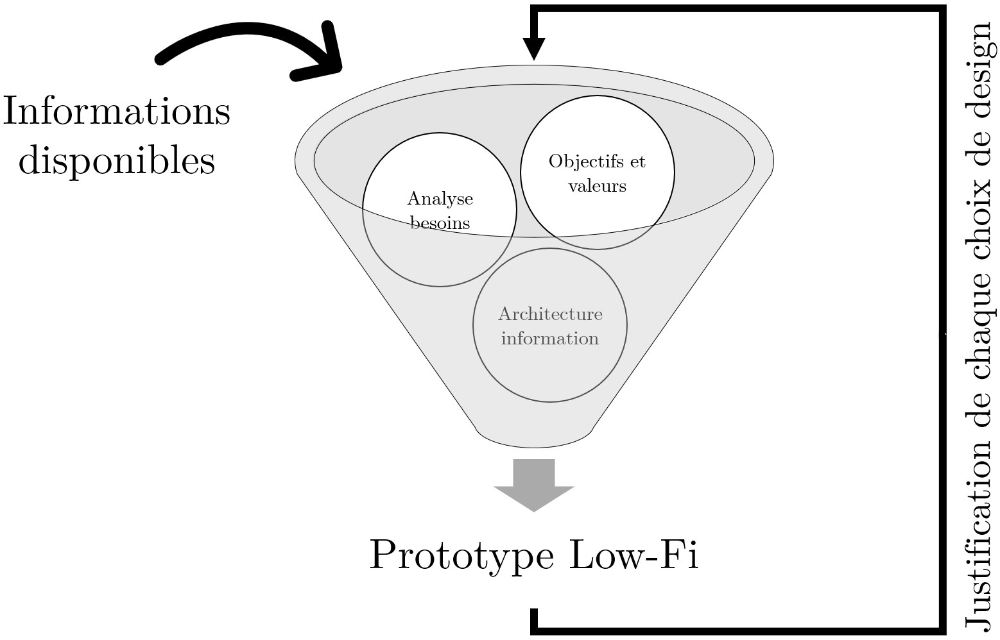
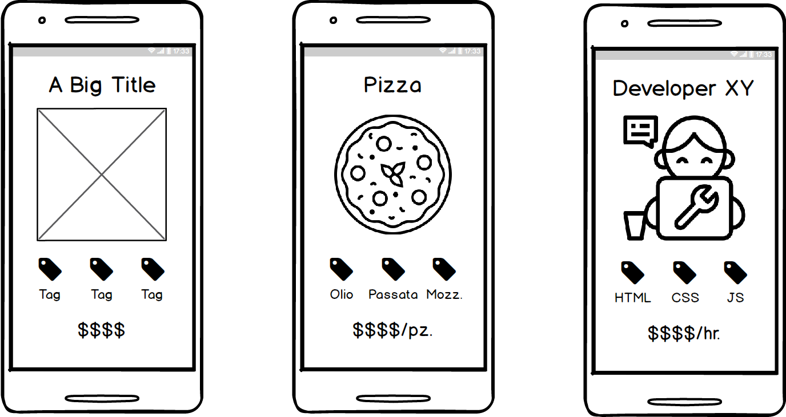
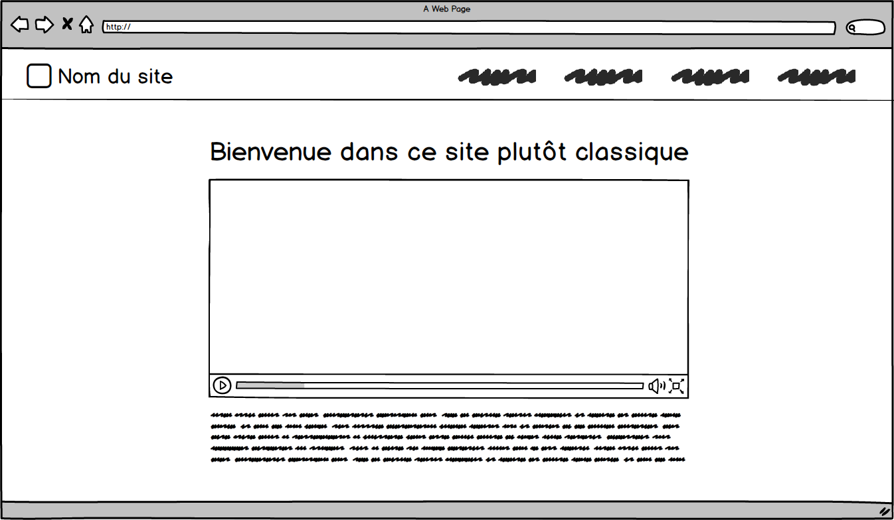
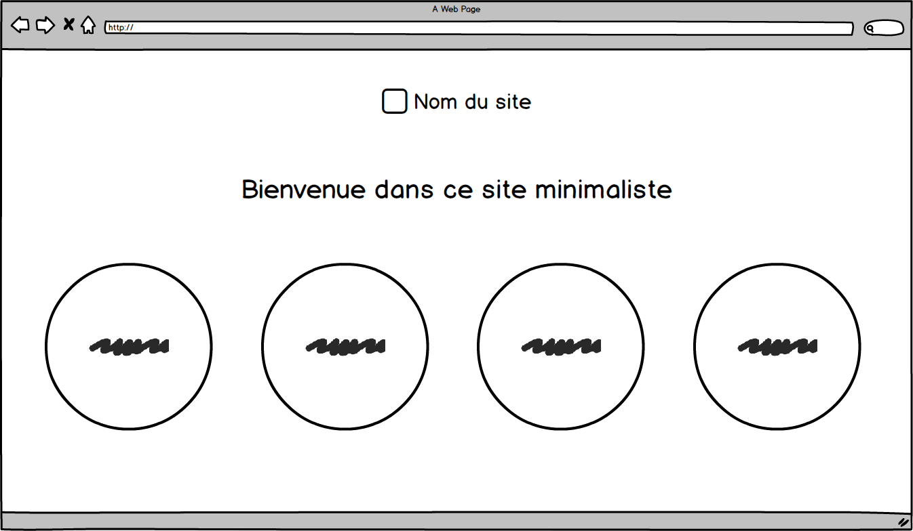
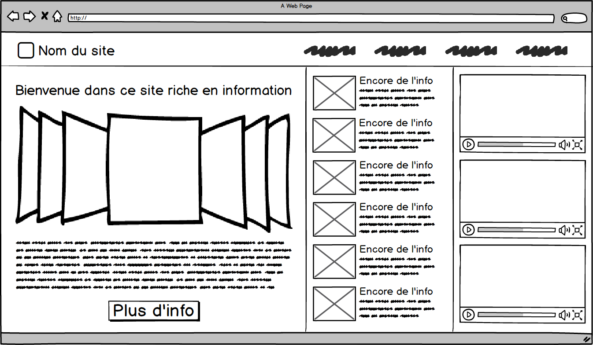

Prototypage low fidelity dans l'UX
Mattia A. Fritz
TECFA, Université de Genève
Définition de prototype
Un prototype est un échantillon, un modèle ou une version
préliminaire d'un produit construit pour tester un concept ou un
processus. Le prototypage sert à fournir des spécifications pour un
système réel et fonctionnel plutôt que théorique.
— Adapté de Wikipedia
Prototypes low-fi et high-fi


Low fidelity
Deux types de prototypes low-fi
Prototype papier
Wireframe low-fi
Prototypage papier
Utilisé surtout, mais pas exclusivement, dans ces contextes :
-
Esquisser l'interface générale
Aider les concepteurs à se faire une idée de l'interface, par exemple au niveau des éléments nécessaires, et favoriser la discussion avec d'autres concepteurs. -
Évaluer des alternatives (e.g. brainstorming)
Dessiner plusieurs versions/variantes du même élément pour prendre en compte plusieurs options possibles avant d'implémenter un choix de manière plus détaillée. -
Simuler/tester des interfaces à un stade préliminaire
Seulement les éléments nécessaires à une certaine fonctionnalité sont ajouté au prototype, tandis que d'autres restent implicites ou à développer plus tard.
Esquisser l'interface
-
Aller à l'essentiel
Vous pouvez commencer par la version mobile par exemple. -
Consistence graphique
Utiliser des symboles de manière cohérente dans les dessins. -
Matériel et esprit brouillon
Évitez de vous affectionner aux dessins ou vous n'allez pas les modifier. -
Un dessin par écran
Ne superposez pas des états différents, utilisez plutôt des éléments détachés.
Évaluer des alternatives
E.g., dessiner autant de variantes possibles en 5 minutes.
Simulation/test tangible
Wireframe low-fi
Utilisé surtout, mais pas exclusivement, dans ces contextes :
-
Produire un squelette de l'interface
Déterminer la présence et position — absolue et relative aux autres éléments — des éléments principaux de l'interface. -
Collaborer/échanger avec d'autres collègues
La numérisation des wireframes permet plus facilement de les modifier à plusieurs mains comparé au prototypage papier. -
Impliquer les stakeholders dans un stade préliminaire
La numérisation permet également de présenter/envoyer plus facilement des échantillons aux parties prenantes pour connaissance/validation.
Graphisme proche du dessin
 Mais les éléments les plus importants peuvent déjà être un peu plus reconnaissables.Prédisposer design responsive
Principes de design visuel

On peut déjà appliquer des principes de
design visuel. Image tirée du projet
Digital skills @ FPSE
sur EduTechWiki
Hiérarchie/importance visuelle
Alignement et espacement
Groupement des éléments
Justification prototypage low-fi

Même si en low-fi, le prototype doit
refléter/synthétiser les informations disponibles et recueillies
depuis les différentes sources et méthodes UX.
Qu'est-ce que c'est
ça fait

Surtout dans le low-fi où les éléments se ressemblent beaucoup,
c'est important de penser en termes de quel est le but/objectif de
chaque élément.
Diriger déjà le design
Diriger déjà le design
Diriger déjà le design
Avantages low-fi
Rapidité
Conception rapide et continue en individuel ou en groupe.Essentiel
Focus sur les éléments structurels et déterminants pour le produit final.Jetable
Moins d'investissement affectif, plus simple de changer d'avis.